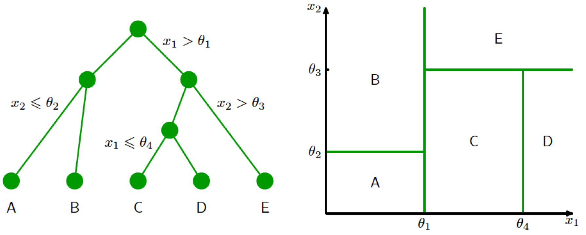
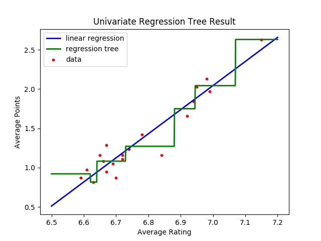
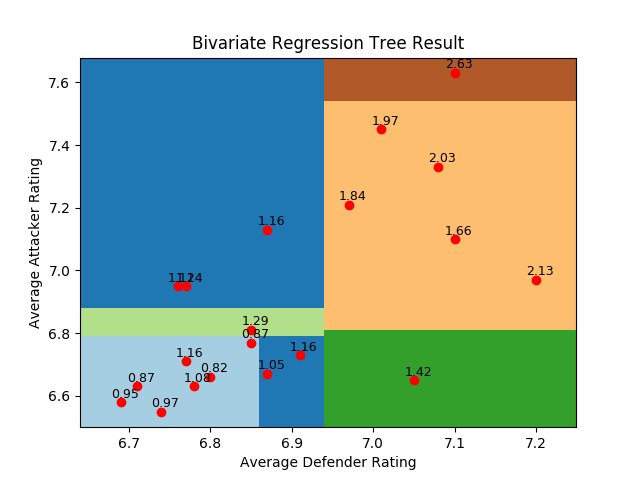
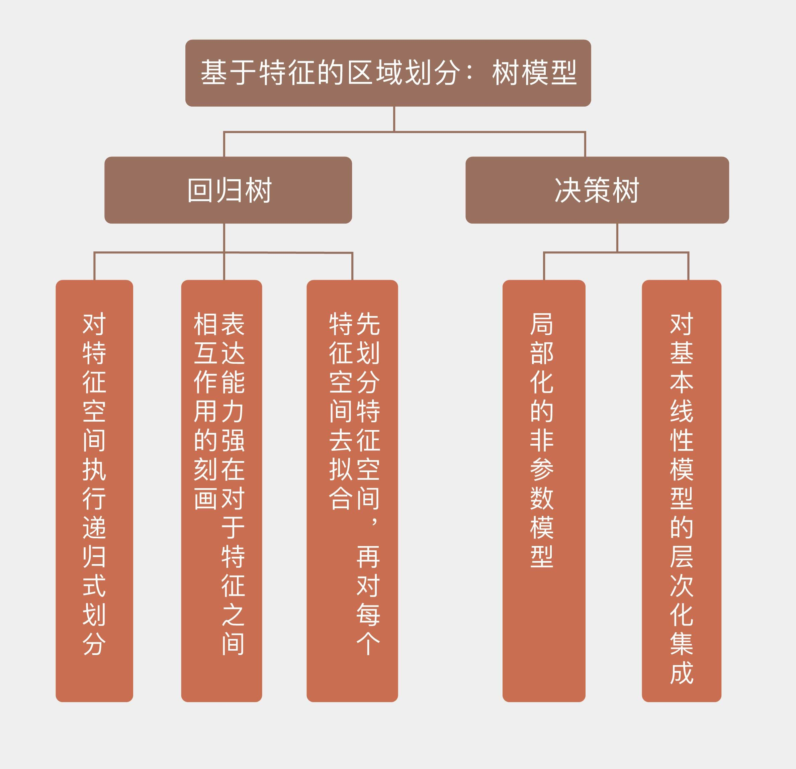

- 00 开篇词 打通修炼机器学习的任督二脉.md
- 01 频率视角下的机器学习.md
- 02 贝叶斯视角下的机器学习.md
- 03 学什么与怎么学.md
- 04 计算学习理论.md
- 05 模型的分类方式.md
- 06 模型的设计准则.md
- 07 模型的验证方法.md
- 08 模型的评估指标.md
- 09 实验设计.md
- 10 特征预处理.md
- 11 基础线性回归：一元与多元.md
- 12 正则化处理：收缩方法与边际化.md
- 13 线性降维：主成分的使用.md
- 14 非线性降维：流形学习.md
- 15 从回归到分类：联系函数与降维.md
- 16 建模非正态分布：广义线性模型.md
- 17 几何角度看分类：支持向量机.md
- 18 从全局到局部：核技巧.md
- 19 非参数化的局部模型：K近邻.md
- 20 基于距离的学习：聚类与度量学习.md
- 21 基函数扩展：属性的非线性化.md
- 22 自适应的基函数：神经网络.md
- 23 层次化的神经网络：深度学习.md
- 24 深度编解码：表示学习.md
- 25 基于特征的区域划分：树模型.md
- 26 集成化处理：Boosting与Bagging.md
- 27 万能模型：梯度提升与随机森林.md
- 28 最简单的概率图：朴素贝叶斯.md
- 29 有向图模型：贝叶斯网络.md
- 30 无向图模型：马尔可夫随机场.md
- 31 建模连续分布：高斯网络.md
- 32 从有限到无限：高斯过程.md
- 33 序列化建模：隐马尔可夫模型.md
- 34 连续序列化模型：线性动态系统.md
- 35 精确推断：变量消除及其拓展.md
- 36 确定近似推断：变分贝叶斯.md
- 37 随机近似推断：MCMC.md
- 38 完备数据下的参数学习：有向图与无向图.md
- 39 隐变量下的参数学习：EM方法与混合模型.md
- 40 结构学习：基于约束与基于评分.md
- 如何成为机器学习工程师？.md
- 总结课 机器学习的模型体系.md
- 总结课 贝叶斯学习的模型体系.md
- 结课 终有一天，你将为今天的付出骄傲.md
25 基于特征的区域划分：树模型
不知道你是否留意过非洲的地图？和其他大洲按照地理边界划分国界的方式不同，很多非洲国家的国境线都是规则的直线条组合。这种非自然的划分背后隐藏着一段屈辱的历史：19世纪起，欧洲的资本主义新贵们开始了对非洲的掠夺。而在巧取豪夺资源之外，他们也没有忘记抢占地盘，这些横平竖直的国境线就是对当年殖民主义者瓜分非洲无声的控诉。
下图是主要殖民国家在非洲的势力范围划分图，图片里的非洲如俎上的鱼肉般被肆意切割，切下的每一块都像黑奴一样，被烫上宗主国的烙印。
瓜分非洲（Scramble for Africa）（图片来自维基百科）
当然，我的目的不是探讨历史，举这个例子的原因是从非洲地图容易直观地联想到机器学习中基于树方法的分类结果。树模型（tree-based model）遵循“分而治之”的思路，以递推方式将特征空间划分为若干个矩形的区间，再在每个区间上拟合出一个简单的模型。在分类问题中，这个简单模型就是类别的标签选择。在“人工智能基础课”中，我曾以用于分类的决策树为例，对树模型做了介绍，你可以回忆一下。下图就是分类决策树对特征空间进行划分的一个实例。

决策树的生成与对特征空间的划分（图片来自Pattern Recognition and Machine Learning, 图14.5 & 14.6）
这一次，我将换个角度，从线性回归模型出发来理解树模型，这种理解思路将从回归树开始。
顾名思义，回归树（regression tree）是用来完成回归任务的树模型。和全局的线性回归相比，树模型是局部化的模型，可以实现非线性的拟合。在从整体到局部的过渡中，回归树的操作和之前介绍过的回归样条方法一脉相承，采用的都是“分段函数”的思路，但两者的区别在于回归树对特征空间执行的是递归式划分（recursive partitioning）。递归的划分不要求一步到位，而是步步为营地对前一次划分的子区域继续做出细化，直到满足预先设定的要求为止。这一点在上面的图示中也有所体现。
这样看来，回归树和原始线性回归的区别仅仅在于全局和局部的差异吗？非也！回归树的表达能力强在对于特征之间相互作用（interaction）的刻画。当用来预测输出的特征有多个时，不同的特征之间很可能存在着交互作用，共同对输出产生影响，而这种影响的作用就超出了线性的范畴。假设输入的特征有\(x_1\)和\(x_2\)两个，如果要考虑它们之间的相互作用，线性回归的模型就需要改写成
\[ y = a_0 + a_1x_1 + a_2x_2 + bx_1x_2 + \\epsilon \]
当\(x_1\)和\(x_2\)各自产生一点微小的变化时，这种变化在交互项中的累积就是
\[ (x_1 + \\delta_1)(x_2 + \\delta_2) = x_1x_2 + \\delta_2x_1 + \\delta_1x_2 + \\delta_1 \\delta_2 \]
可以看出，原始的单个交互项在扰动之后变成了四项，其中的最后一项无疑会给线性模型的解释造成困扰。而当特征的数目增加时，特征之间交互项的数目会以指数速度增加，从而给这些非线性的描述带来严重的困难。
和线性回归“由因及果”的推理方式相比，回归树采用了更有弹性的“由果推因”的方式。它并不直接构造从自变量到因变量明确的数量关系，而是通过对因变量进行分组来确定自变量的影响方式。
分组的依据有两个：一个是作为输出的因变量的相似性，另一个是作为输入的单个自变量的相异性。因变量的相似性决定了被划分到同一组的数据在输出上的差别较小，自变量的相异性则决定了被划分到不同组的数据在某一个输入属性上的差别较大。对划分好的数据集继续迭代执行这个过程，就可以完成对特征空间的递归式划分。
由于回归树采用树状结构来建模，因此从树结构的角度看，对数据集的递归式划分就是对树模型的不断分枝，每个分枝点都是让因变量产生最大差异的那个自变量。在这个过程中，每个节点内样本的同质性会不断增强，当样本完全同质化或者数目过少时，回归树的构造就完成了。分枝点具体的选择原则在上一季的专栏中我已经做过介绍，你可以回忆一下。
回归树和分类树的区别在于将信息增益的指标替换成了方差，算法会选择分类后两个类别方差之和最小，也就是和原始方差相比下降最大的那个属性进行划分，这种划分方式被称为方差下降（variance reduction）。
下面这个对回归树划分方式的说明来自中文文献《CART分类与回归树介绍》，这篇文章发表在1997年《火山地质与矿产》的第18卷第1期上，这从侧面反映出统计学习的应用范围有多么广泛。文章说明划分的优劣取决于生成的结点中因变量的离散程度，划分之后因变量的取值越集中，划分的效果就越好。树生成的算法就是一步一步找到每一个最优的划分。
假设训练集中总共有300个数据，方差为51.5。有一种划分方式将数据集分为142和158两组，两组的方差分别是46.7和49.3。这表明左右两个结点中因变量的离散程度和总体的离散程度相近，显然，这一划分的效果不佳。相比之下，另一个划分可以让左结点中的方差为20.3，右结点中的方差为26.0。这种划分减少了一半的方差，在每个结点里，因变量都更加接近它们的平均值，因而是个更好的划分。
这样的过程体现出局部化模型典型的处理方式，也就是先将整体划分成局部，使每个局部都体现出一定的规律性，再对每个局部的规律做出拟合。划分可以通过逐步选择具有最大信息增益或者最大方差下降的特征来完成，那么在划分出的局部上如何来拟合呢？回归树给出了一个非常简单的答案，那就是每个局部上所有数据的取值都是常数，其数值等于这个局部内样本点输出的均值。这样的决策树输出的就是像楼梯一样高低错落的超平面的组合。
为了测试回归树的效果，我用它对一直应用于回归任务的英超数据集进行了拟合，结果如下。实现回归树需要调用Scikit-learn库中tree模块的DecisionTreeRegressor类。在拟合时，回归树的最大深度被设置为3，这意味着对特征空间的划分次数为3次，最多可以分成\(2 ^ 3 = 8\)个区域。可以看到，在一维的情形下，回归树其实是分段的常数函数，只不过不同分段之间的分界点并不是人为指定，而是通过方差下降的方法计算出来的。

回归树在英超数据集上的拟合结果
为了进一步考察回归树在多元回归问题中的表现，并观察回归树对特征之间的交互的处理方式，我们再来看看用回归树去拟合位置评分数据和场均积分的关系。出于便于可视化的考虑，在位置评分中我只选择了后卫评分和前锋评分两者作为输入的特征。选择这两者的考虑是在前面的多元回归分析中已经证明，这两个属性和积分之间存在较强的相关性，而两个属性所映射的二维平面也更容易观察。
从回归树的结果可以看出，在不同的数据点上，两个特征的交互方式是不同的。树算法首先根据防守球员的得分将数据集一分为二。在防守水平前三分之一的队伍中，进攻水平并没有产生太大的影响，一上一下两个傲然不群的数据点更像是数据集中的异常点。而在防守较差的三分之二里，进攻和防守之间的互动就复杂了许多，形成的区域划分也复杂了许多。

回归树在英超数据集上的多元拟合结果
无论是回归树还是分类树，在生成时都遵循相同的流程，就是先划分特征空间，再对每个特征空间去拟合。两者的区别主要在于选择划分特征时采用的指标不同。和线性回归相比，决策树更加符合人类做出决策、尤其是像医学诊断这类决策的思维流程，它的描述性还要更好一些。但是决策树对加性关系的表达能力不强，如果因变量真的是自变量的线性组合的话，使用决策树恐怕就要弄巧成拙了。
在可用于划分的自变量较多时，即使树结构的结点树已经预先设定，要穷举搜索到方差和最小的最优树依然是个费时费力的过程。贪心策略是确定决策树的结构时通常采用的方法。
贪心策略（greedy strategy）是活在当下的方法，在生成树时每次只增加一个结点，确定结点时采取在当前状态下最优的选择，让每个子集都在当前条件下具有最正确的分类。但这种方式并不能确保找到全局的最优解，因而容易造成过拟合。
贪心策略的另一个问题是终止条件，当树结构达到一定深度后，进一步的划分很可能不会让子集方差产生明显的下降，继续划分下去就会造成过拟合。应对这一现象的手段是先让贪心策略生成一棵比较复杂的树，当每个子集中样本的数目都达到下限时终止算法，再来对这棵树进行剪枝操作。
剪枝（pruning）是对决策树残余方差和复杂度之间的折中，对回归树来说，剪枝的目标函数可以写成
\[ C(T) = \\sum\\limits_{\\tau = 1}^{| T |} \\sum\\limits_{{\\bf x}_n \\in R_{\\tau}} (t_n - \\dfrac{1}{N_{\\tau}}\\sum\\limits_{{\\bf x}_n \\in R_{\\tau}}t_n) ^ 2 + \\lambda | T | \]
其中\({\\bf x}_n\)表示样本的自变量，\(t_n\)表示样本的因变量，\(R_{\\tau}\)表示决策树划分出的区域，其中包含\(N_{\\tau}\)个样本，\(T\)表示划分区域的数目。显然，\(T\)的作用是对目标函数的正则化。
决策树一个主要的缺点是对数据点异常敏感，训练数据集一点不起眼的变动就足以生成一棵完全不同的决策树，而数据集中的异常点也会对决策树结果造成未知的影响。此外，在处理回归任务时，决策树得到的是不连续的结果。这样看来，回归样条就可以视为决策树的一个优化。
广义来看，决策树可以视为对基本线性模型的层次化集成，这里的基本模型就是数据在每个划分区域上的回归或分类规则，这些规则一般是线性的。决策树的作用是将这些固定的局部线性规则进行拼接式的组合，从而生成整体意义上的非线性模型。后面我们将发现，看似简单的集成策略却能在机器学习中发挥出出人意料的优异性能。
今天我以回归树为例，和你分享了决策树的基本原理，包含以下四个要点：
决策树是局部化的非参数模型；
决策树生成算法先将特征空间划分成若干区域，再在每个区域上拟合输出；
决策树能够更加灵活地刻画不同属性之间的相互作用；
决策树可以看成最简单的集成模型。
作为规则集合的决策树不仅仅是一类机器学习的模型，更是决策分析中常用的结构化方法。那么你能想到哪些决策树在机器学习之外的应用呢？
欢迎发表你的观点。

© 2019 - 2023 Liangliang Lee. Powered by gin and hexo-theme-book.